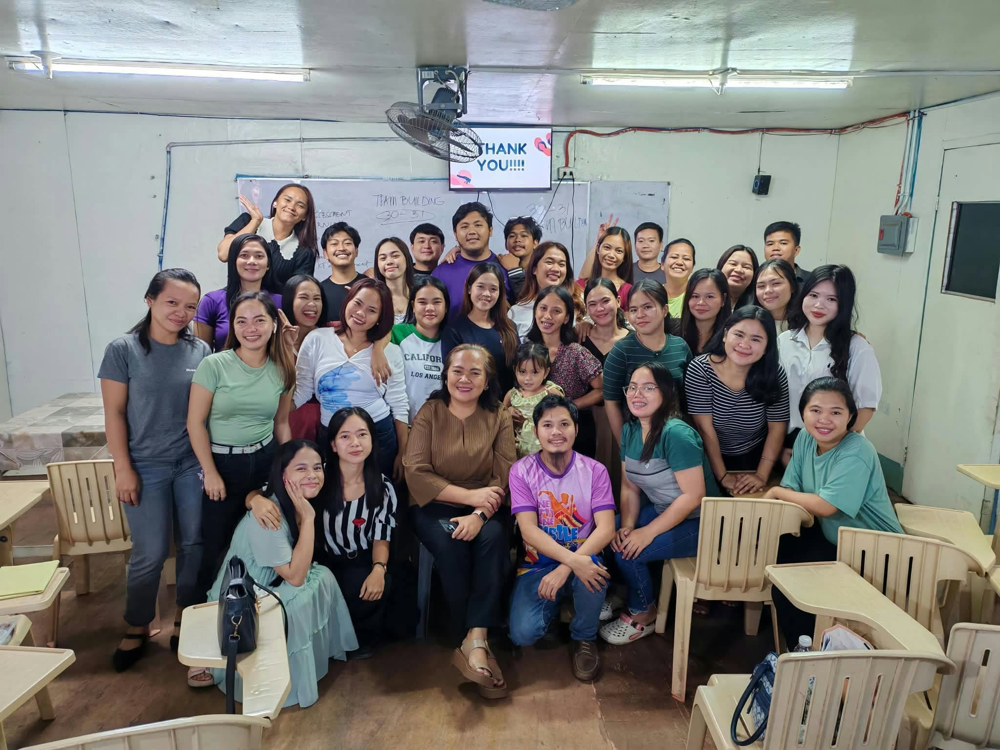
Teachers' Day
Celebrating Our Teachers
A day to say thank you to the teachers who guide, inspire, and believe in us.
Welcome to my world ✦
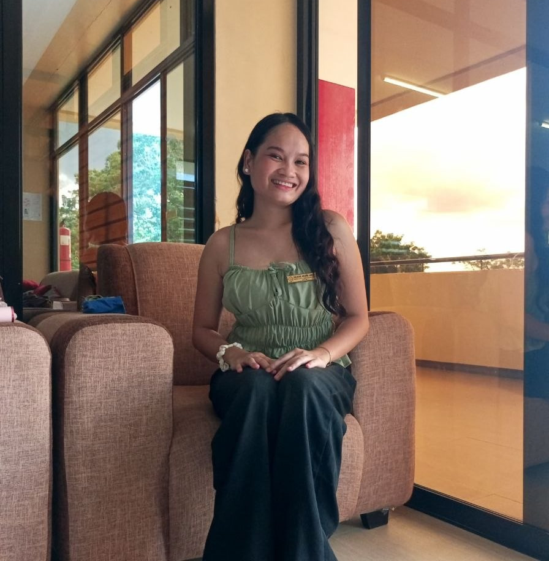
Welcome to Arlene Jane's Lucan Journey — a personal space that shares my experiences, creativity, and growth throughout my journey at Lucan. As a student, I enjoy exploring my creativity, learning new skills, and discovering experiences that help me grow both personally and academically.
I am a simple, curious, and passionate person. I love learning new things, meeting different people, and making meaningful connections. I enjoy spending time with my two cats, Leo and Ace, and my dog, Chakoy. They are a special part of my life and bring me so much happiness. I value family, friendship, personal growth, and the little things that make life meaningful. — it tells a story.
Teachers' Day ♡
A six-part look back at my time at Lucan — what happened, how it felt, and what it taught me.
After graduating with a Bachelor of Arts in English Language Studies, I honestly thought I was finally done with school. I remember thinking that graduation was the end of my student life. But later, I realized that if I wanted to pursue teaching and become a Licensed Professional Teacher (LPT), I still needed to take the required professional education units because my bachelor's degree was a non-board course.
My Lucan journey became more than that.
One of the things I will definitely remember is the amount of activities our teachers gave us. 😂 Sometimes, we were still trying to finish the first activity, and then suddenly, another activity was already given. There were moments when I would look at the clock and think, “Wait, I'm not even done with the first one yet!”
It definitely made me conscious about time, especially when I was not sure if I could finish everything within the assigned time. But eventually, I realized that those activities were also teaching me to work harder, manage my time, and challenge myself.
Another memorable part of my Lucan journey was meeting people who were much older than me. I am only 22, while some of the friends I made were already in their 30s and even 40s.
At first, I thought the age gap might make it difficult for us to connect. But surprisingly, we bonded so well that sometimes we completely forgot that there was a big age difference between us. We laughed together, talked about different things, helped each other, and simply enjoyed each other's company.
That experience made me realize that the old saying is actually true:
Age is just a number.
I never thought that I would make friends from different age groups, but I am genuinely grateful that I did.
Another thing that challenged me was reporting in front of the class. I already know how to report and speak in front of people, but honestly, that does not mean I don't get nervous. Of course I still do!
Sometimes I would think, “What if I mess up?” Especially because some of my classmates already have jobs and are only taking the units they need to get their teaching license. Compared to them, I sometimes felt like I was just a fresh graduate with confidence, willingness to learn, and a strong desire to do my best.
That thought could be nerve-wracking. But eventually, I realized that most of those worries were only in my head.
My classmates were actually friendly, kind, supportive, and funny. They made me feel comfortable, and I realized that I didn't have to be afraid of them or compare myself to them.

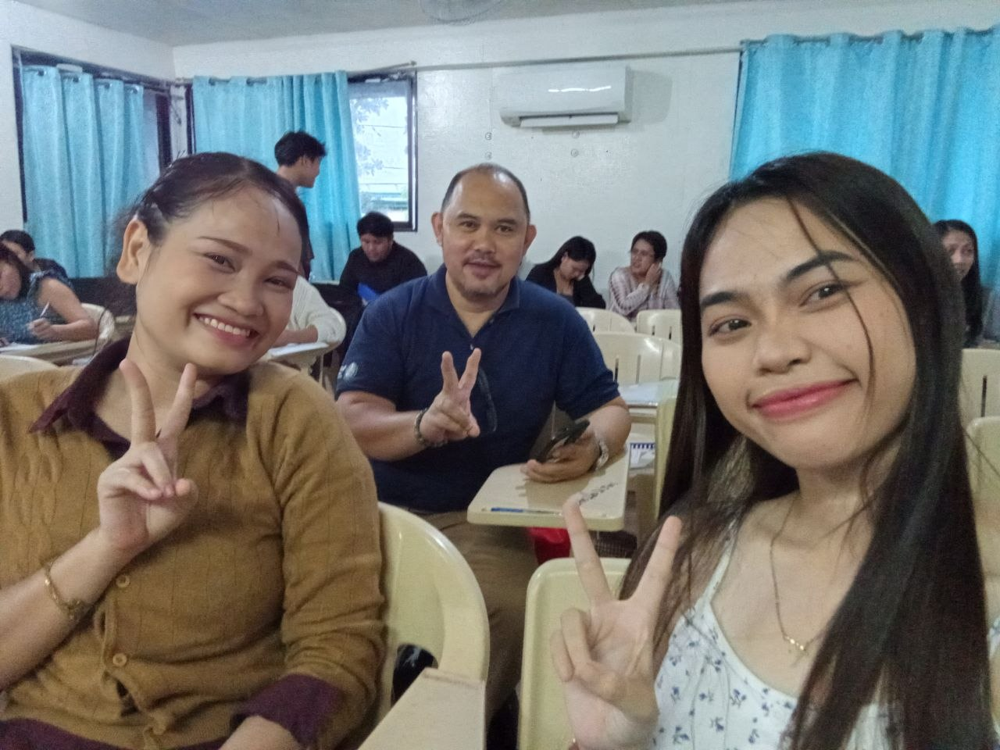
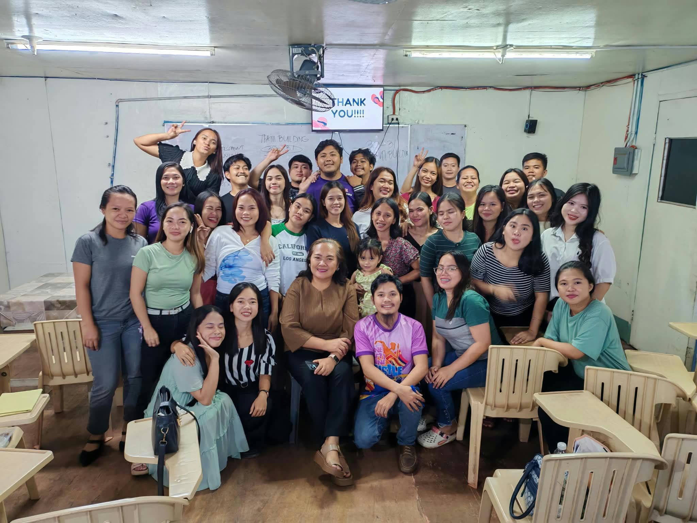
My Lucan journey came with a lot of emotions.
At first, I was excited because I knew that I was taking a step closer to becoming an LPT. But I was also nervous because I was entering a new environment with people who had different experiences from mine.
There were times when I felt pressured by the activities and deadlines. Sometimes I was still working on one task when another one was already waiting. It made me think, “How am I supposed to finish all of this?” 😅
But somehow, that pressure pushed me to work harder.
I also felt nervous during reporting. Even though I knew I could speak in front of people, there was always that little voice in my head saying, “What if you make a mistake?”
I think part of it came from comparing myself to my classmates. Some of them already had jobs and experience, while I was a fresh graduate trying to find my way into the teaching profession.
But as I got to know them, that nervousness slowly disappeared.
I realized that I did not need to compare myself to them. Everyone had their own story and their own reason for being at Lucan.
And I am especially grateful for the friendships I made. I never expected to become close with people much older than me, but they taught me that friendship does not really depend on age. What matters is how people treat and understand each other.
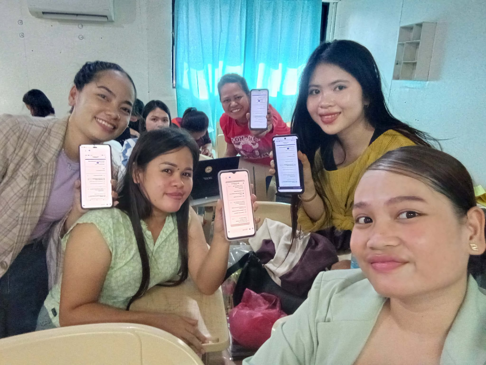
There were definitely challenging parts of my Lucan experience. The deadlines, activities, reporting, and other requirements sometimes made me feel tired and pressured. There were moments when I questioned whether I could keep up.
But looking back, I think those challenges were actually good for me. The activities challenged me to work faster, think better, and push myself beyond what I thought I could do. The reporting activities helped me become more comfortable speaking in front of different people, and the challenges reminded me that if I really want to become a teacher, I need to be prepared for situations that will test my patience and confidence.
But the best part of Lucan was definitely the people. I am grateful that I met classmates from different age groups and backgrounds. Some of them already have careers and experiences that I can learn from, while I also had my own experiences to share.
What surprised me most was how easily we connected despite the age difference. We joked around, helped each other, and made the classroom environment feel lighter. Sometimes, I completely forgot that some of them were much older than me.
People don't have to be the same age to understand each other.
That experience taught me something simple but meaningful, and it is one I will keep with me.
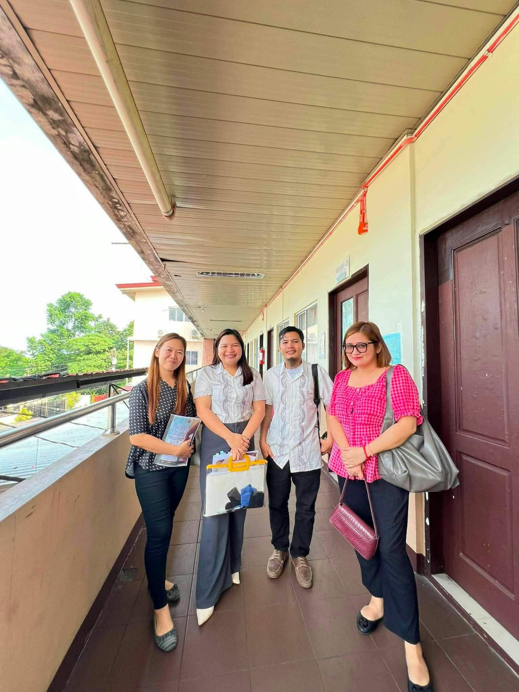
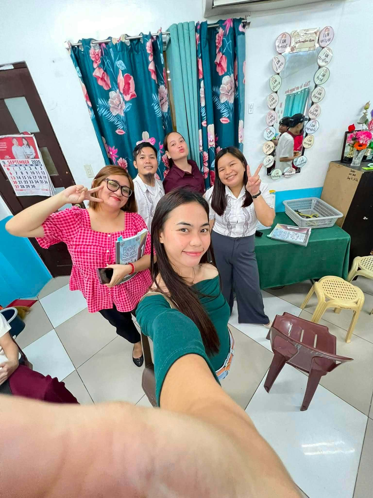
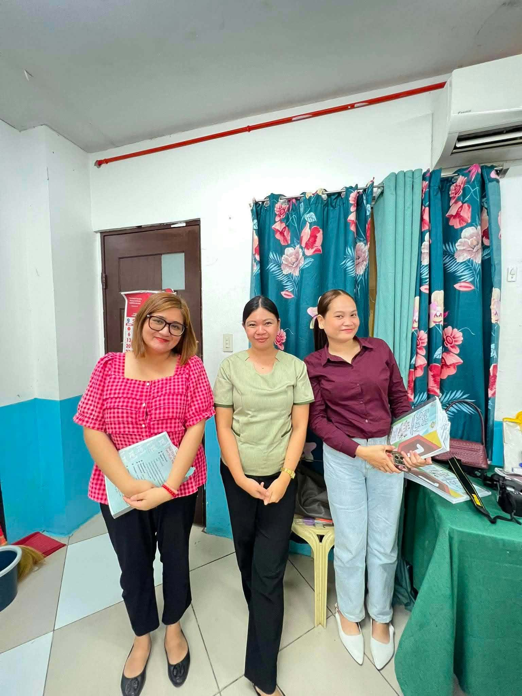
When I look back at my Lucan journey, I realize that I learned much more than the lessons written in our modules. I learned about people, confidence, humility, patience, and professionalism.
Before Lucan, I thought professionalism was mostly about being knowledgeable, prepared, and responsible. But my experiences with my classmates and teachers helped me understand that professionalism also includes being humble.
I met people who already had jobs and years of experience, yet they were still kind, approachable, funny, and willing to learn. That really made an impression on me.
It made me realize that being knowledgeable does not mean you have to make other people feel that you are better than them. In fact, true professionalism can be seen in how a person treats others.
I also learned that confidence and humility can exist together. I can be confident in what I know while still being humble enough to listen, learn, ask questions, and accept that there are things I do not know yet. My classmates taught me this without even realizing it.
The age difference also taught me something important. I used to think that having a large age gap might make friendship difficult. But my experience proved otherwise. We connected naturally, and eventually, the age difference didn't matter anymore. That is why I can honestly say that “age is just a number.”
It is about continuously learning and becoming better than who I was yesterday.
Most importantly, Lucan made me realize that my journey toward becoming a teacher is not about proving that I am better than anyone else.
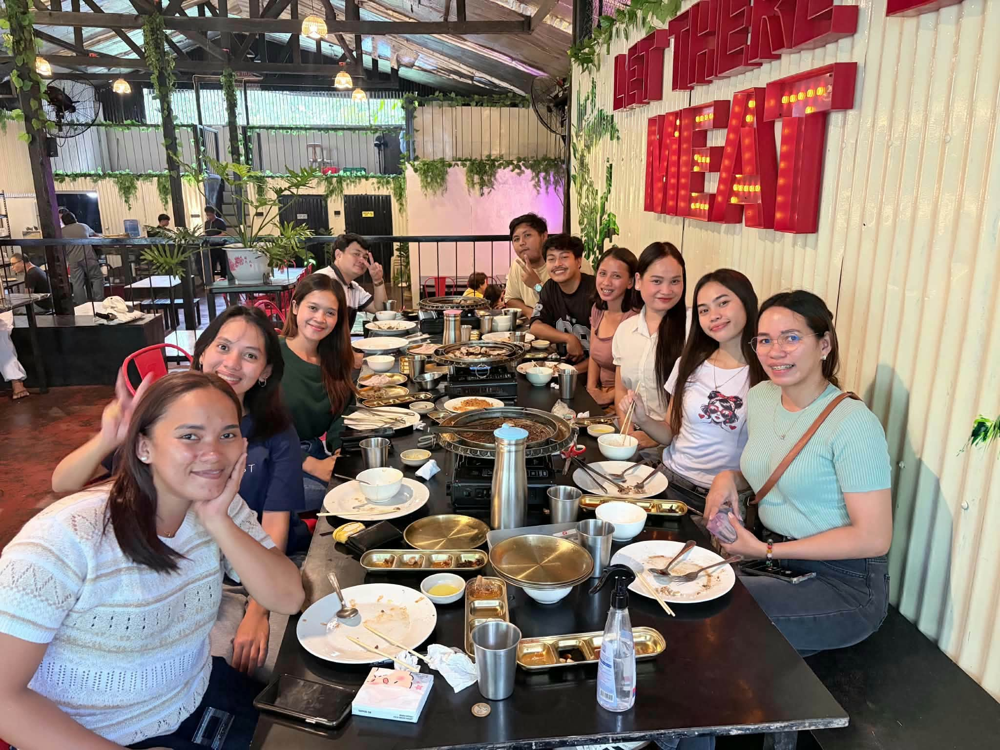
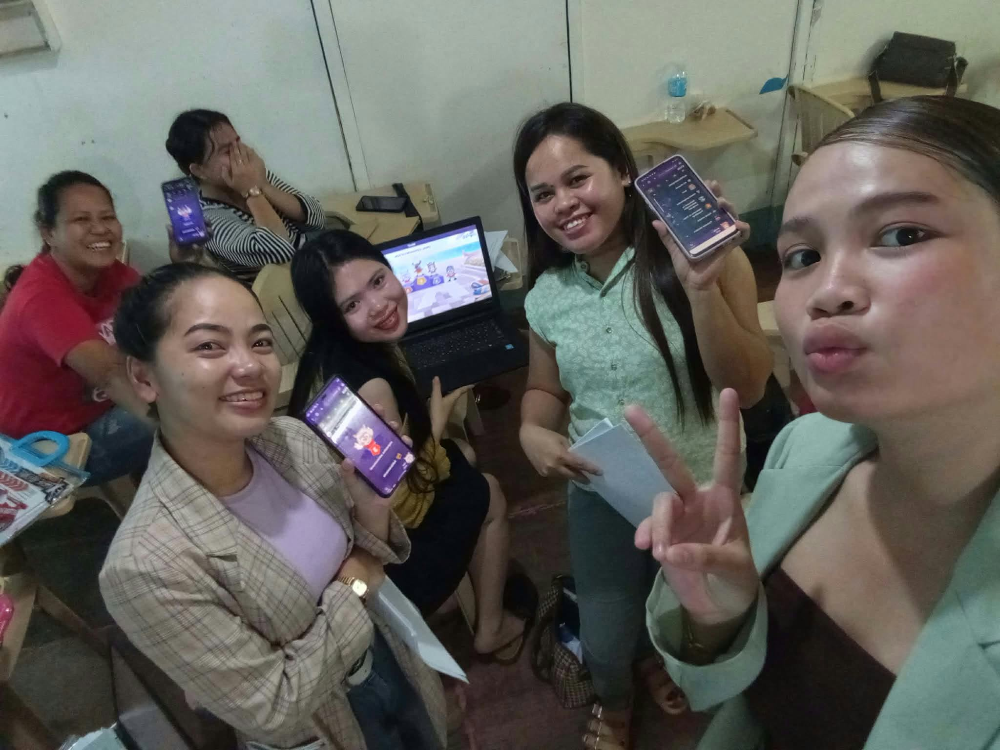
If I could go back to the beginning of my Lucan journey, I would tell myself:
Relax. You don't have to be afraid of everyone. Just be yourself, do your best, and be willing to learn.
I spent some time worrying about whether I could keep up with my classmates, especially those who already had jobs and more experience. But I eventually realized that I didn't need to compete with them. I only needed to focus on my own growth.
I could also have managed my time better, especially when we had multiple activities and deadlines. Instead of worrying about whether I could finish everything, I could have simply started working and trusted myself to get it done.
Moving forward, I want to carry all these lessons with me. I want to become more organized, improve my time management, become more confident when speaking in front of others, and continue learning from the people around me.
Most importantly, I want to remain humble. I want to remember that no matter how much knowledge I gain or whatever title I may eventually have after my name, I should never stop being willing to learn from others.
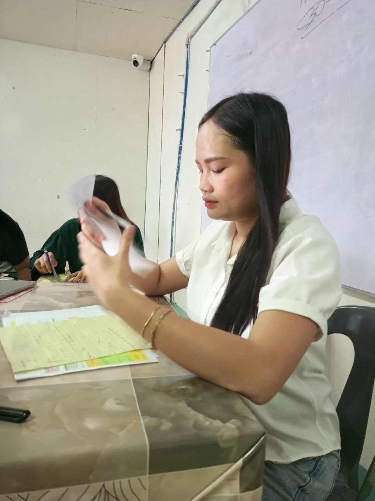
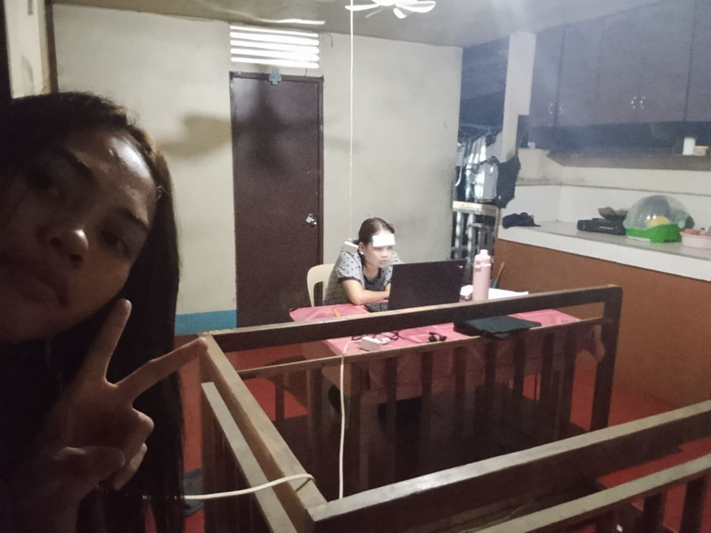
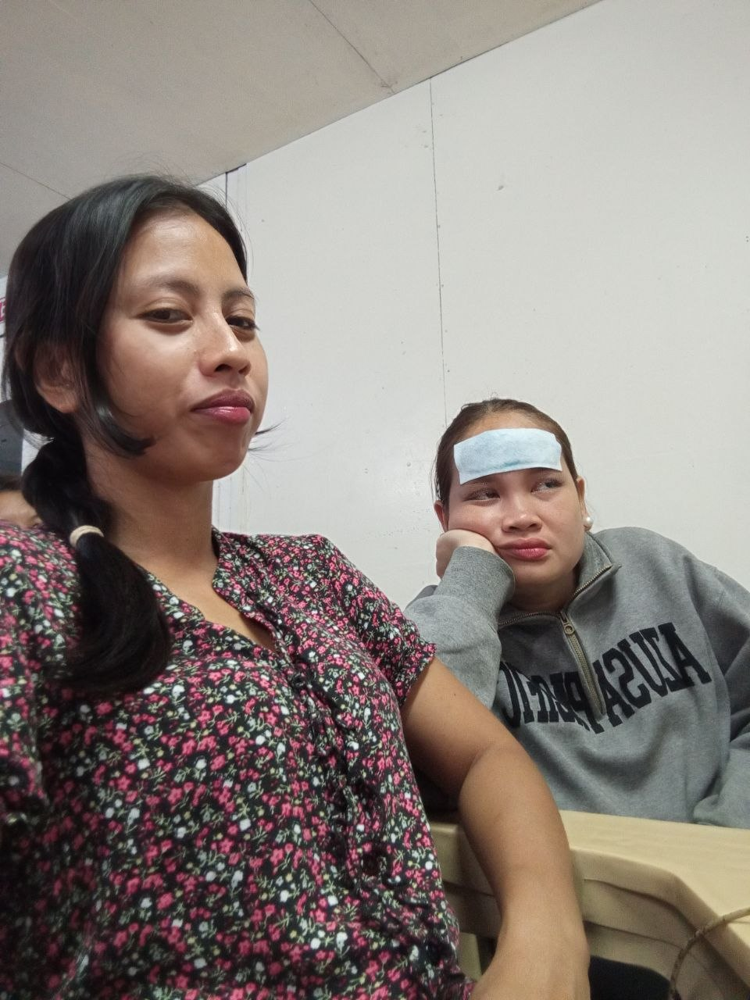
My Lucan journey started with a simple goal: to complete the education units I need so I can pursue my dream of becoming an LPT. But along the way, it became so much more.
I learned from my teachers. I was challenged by activities and deadlines. I became nervous during reports but learned to trust myself. I met people much older than me and unexpectedly made genuine friendships with them. I learned that age does not define friendship, experience does not make someone better than another person, and confidence becomes more meaningful when it comes with humility.
I came to Lucan thinking I was only going to gain units and knowledge about education. But I am leaving the experience with something more valuable:
Lessons about people, friendship, confidence, humility, and professionalism.
And maybe that is what makes this journey worth remembering.
I may have started as a fresh graduate who was simply trying to find her way toward becoming a teacher, but Lucan is helping me become more than just a teacher who knows what to teach it is helping me become a teacher who knows how to treat people.
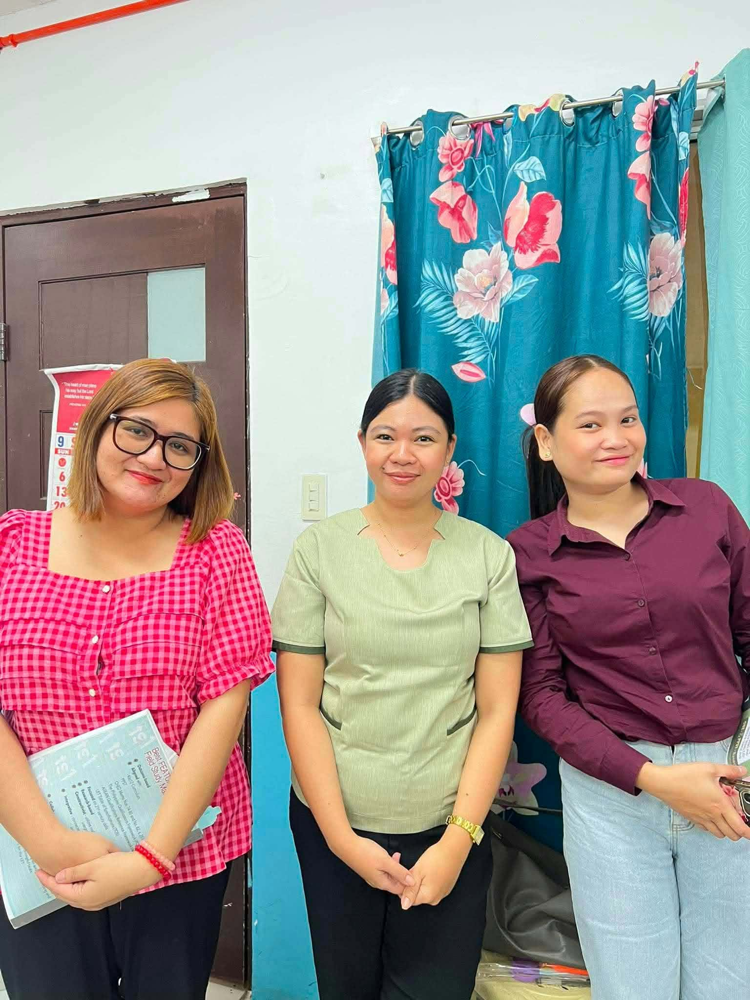
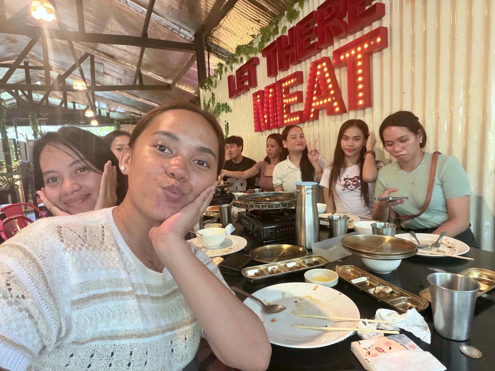

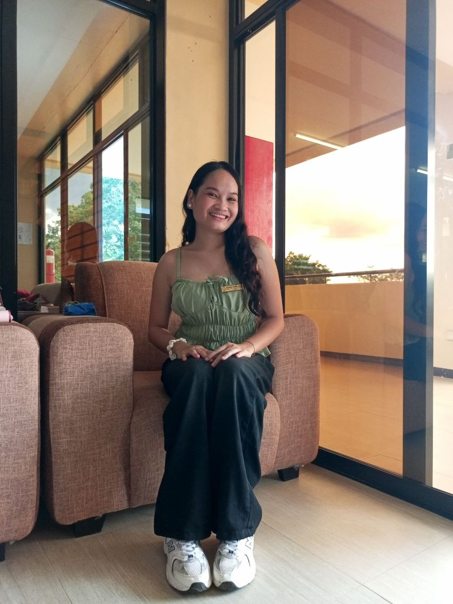
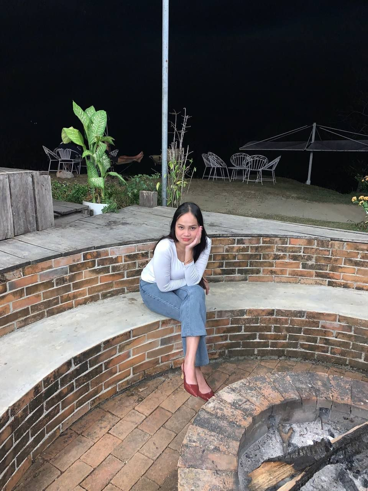
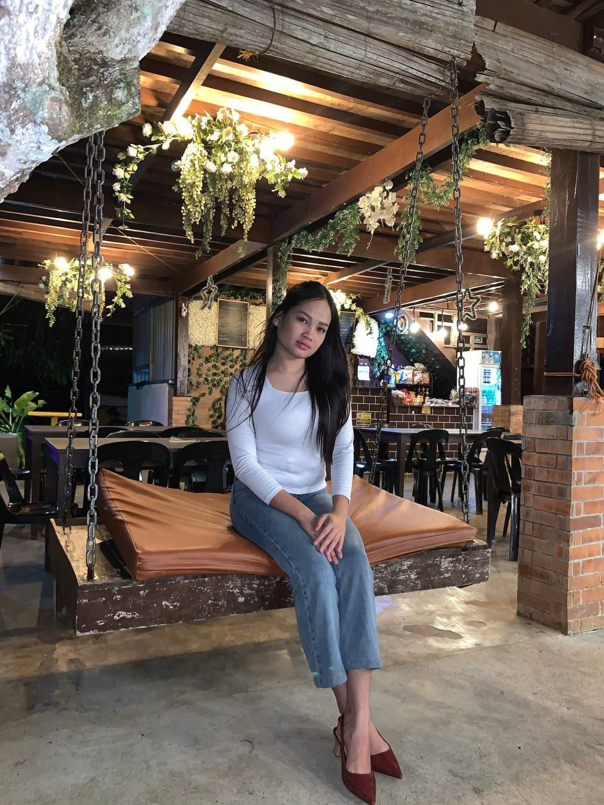